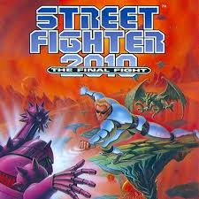
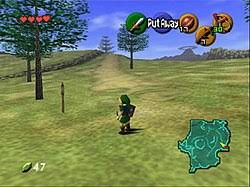
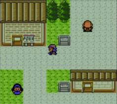
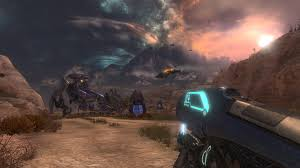
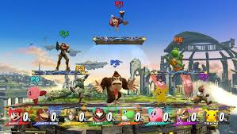
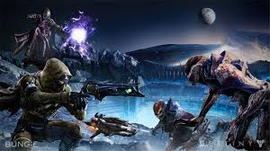
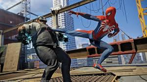

Featured Eras
1980s – Arcade & 8-Bit Era
The rise of arcade cabinets and home consoles. Iconic titles like Space Invaders and Pac Man, Asteroids, and Tetris and Tron. helped define the industry.
1990s – 16-Bit & 3D Revolution
Gaming expanded into new dimensions with franchises like
2000s – Online & Modern Classics
Multiplayer gaming grew rapidly, and retro design inspired new titles influenced by earlier generations.

1980s – Arcade & 8-Bit Era
The rise of arcade cabinets and home consoles. Iconic titles like Super Mario Bros. helped define the industry. Released in 1985, Super Mario Bros. was a groundbreaking platformer that set new standards for game design and storytelling. It introduced players to the Mushroom Kingdom and the iconic characters of Mario and Luigi, solidifying its place as one of the most influential games in history. It was a game released for Nintendo Entertainment System (NES) and it was a huge success, selling over 40 million copies worldwide. The game’s innovative level design, tight controls, and memorable music made it a timeless classic that continues to be celebrated by gamers of all ages. It introduced side-scrolling mechanics and power-ups like the Super Mushroom, and world-based level progression. It was a game that set the standard for platformers and is still beloved by gamers today.

1980s – Arcade & 8-Bit Era
The rise of arcade cabinets and home consoles. Iconic titles like Tron helped define the industry. Tron was developed by Bally Midway and released in 1982. It was based on the popular science fiction film of the same name and featured innovative vector graphics that created a unique visual style. The game consisted of four different sub-games, each with its own gameplay mechanics, including light cycle Tron is known for the use of computer-generated graphics, which was groundbreaking at the time. The game’s distinctive neon visuals and fast-paced gameplay made it a hit in arcades and helped establish it as a cult classic. Tron’s influence can still be seen in modern games that draw inspiration from its futuristic aesthetic and gameplay elements. Game was designed by Dave Theurer, who also created the classic arcade game Tempest. Tron was one of the first games to use a color vector display, which allowed for smooth and vibrant graphics that stood out in arcades. The game’s unique blend of action and strategy, along with its connection to the popular film, contributed to its lasting legacy in gaming history. The game was developed in a collaboration between Bally and Disney, capturing the essence of the film while introducing players to a new interactive experience. Tron’s success in arcades helped pave the way for future games that combined cinematic storytelling with engaging gameplay.

1990s – 16-Bit & 3D Revolution
The rise of arcade cabinets and home consoles. Iconic titles like Street Fighter helped define the industry. Street Fighter was developed by Capcom and released in 1987. It was one of the first fighting games to gain widespread popularity and is considered a cornerstone in the development of the fighting game genre. The game introduced players to iconic characters like Ryu, Ken, Chun-Li, and Guile, each with their own unique fighting styles and special moves. Street Fighter's innovative gameplay mechanics, including combo systems and special attacks, set new standards for competitive gaming. The game's success led to numerous sequels and spin-offs, establishing it as a franchise that continues to be relevant in modern gaming culture. Its influence on the fighting game genre is immeasurable, with many contemporary games still drawing inspiration from its core gameplay elements.

1990s – 16-Bit & 3D Revolution
The Legend of Zelda: Ocarina of Time was a landmark title in the 1990s. Released in 1998 for the Nintendo 64, it revolutionized the action-adventure genre with its innovative gameplay mechanics and immersive world. The game introduced players to the mystical land of Hyrule and its iconic characters like Link, Zelda, and Ganon. It featured a unique time-traveling mechanic that allowed players to switch between different time periods, adding depth to exploration and puzzle-solving. Ocarina of Time's success was not only measured in sales but also in critical acclaim. It is widely regarded as one of the greatest video games ever made, setting new standards for storytelling, level design, and player engagement in action-adventure games.

1990s – 16-Bit & 3D Revolution
Pokemon Crystal Version was a landmark title in the 1990s. Released in 2000 for the Game Boy Color, it expanded upon the original Pokemon games with new features and gameplay elements. The game introduced players to new Pokemon species and enhanced gameplay mechanics, including new moves and abilities. It also featured improved graphics and sound compared to previous versions. Crystal Version's success was not only measured in sales but also in critical acclaim. It is widely regarded as one of the greatest Pokemon games ever made, setting new standards for RPGs and expanding the franchise's appeal.

2000s – Online & Modern Classics
Halo Reach was a landmark title in the 2000s. Released in 2010 for the Xbox 360, it was a major entry in the Halo franchise that expanded upon its predecessor's gameplay and narrative elements. The game introduced players to new environments and enemies, including the Covenant's new weapons and vehicles. It also featured improved graphics and sound compared to previous versions. Halo Reach's success was not only measured in sales but also in critical acclaim. It is widely regarded as one of the greatest Halo games ever made, setting new standards for multiplayer and single-player campaigns.

2010s – Modern 3D & Multiplayer
Super Smash Bros. Ultimate was a landmark title in the 2010s. Released in 2018 for the Nintendo Switch, it was a major entry in the Smash Bros franchise that expanded upon its predecessor's gameplay and narrative elements. The game introduced players to new characters and stages, including new moves and abilities. It also featured improved graphics and sound compared to previous versions. Smash Bros. Ultimate's success was not only measured in sales but also in critical acclaim. It is widely regarded as one of the greatest Smash Bros games ever made, setting new standards for multiplayer and single-player campaigns.

2010s – Online & Modern Classics
Destiny was a landmark title in the 2010s. Released in 2014 for the PlayStation 3 and Xbox 360, it was a major entry in the Destiny franchise that expanded upon its predecessor's gameplay and narrative elements. The game introduced players to new environments and enemies, including new weapons and vehicles. It also featured improved graphics and sound compared to previous versions. Destiny's success was not only measured in sales but also in critical acclaim. It is widely regarded as one of the greatest Destiny games ever made, setting new standards for multiplayer and single-player campaigns.

2010s – Modern 3D & Multiplayer
Spiderman was a landmark title in the 2010s. Released in 2017 for the PlayStation 4 and Xbox One, it was a major entry in the Spiderman franchise that expanded upon its predecessor's gameplay and narrative elements. The game introduced players to new environments and enemies, including new weapons and vehicles. It also featured improved graphics and sound compared to previous versions. Spiderman's success was not only measured in sales but also in critical acclaim. It is widely regarded as one of the greatest Spiderman games ever made, setting new standards for multiplayer and single-player campaigns.
Project Mission
This archive serves as a historical record of video games that shaped the industry. It is not a gaming platform, but a curated reference highlighting milestones in interactive entertainment.